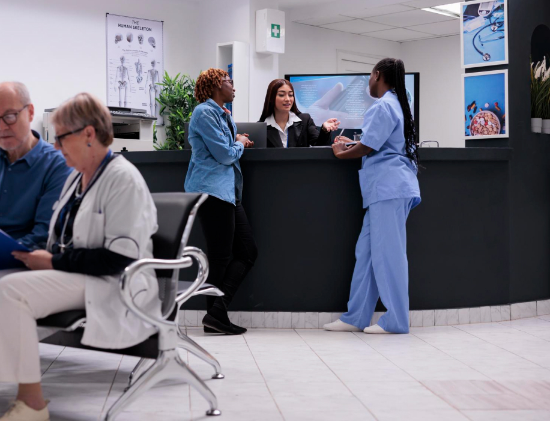
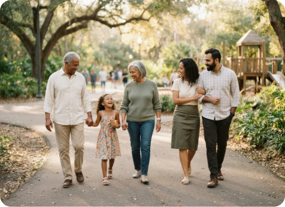

Compassion
We listen without rushing and make space for each person’s concerns, culture, and goals.
We make primary care feel personal, connected, and dependable; so every member of your family has a physician who knows their story and stays beside them through every stage of life.

Astoria is a family physician hospital where primary care begins with listening. We bring routine, preventive, urgent, and ongoing care together in one welcoming place, making it easier to navigate health decisions as your family changes.
“We believe the strongest care is continuous: one trusted relationship, supported by a connected team, over time.”
From a child's first wellness visit to support for healthy aging, our physicians coordinate screenings, medication, specialist referrals, and follow-up. Every plan reflects the person not only the condition.
Your needs change over time. Your care should adapt without making you start over. Astoria brings the essentials of family medicine into a single, coordinated relationship.

Our mission is to make excellent family medicine accessible and human, helping people prevent illness, manage change, and live with greater confidence through every season of life.
We listen without rushing and make space for each person’s concerns, culture, and goals.
We invest in relationships that deepen over years, not one-off encounters.
We explain options clearly, use evidence thoughtfully, and protect every patient’s dignity.
Physicians, patients, caregivers, and specialists share one coordinated direction.
Better health starts with fewer barriers. We partner with local schools, caregivers, and community organizations to make prevention, health literacy, and timely primary care easier to access.
Whether you need a first visit, a preventive check-in, or ongoing support, our team is ready to listen and help you move forward.